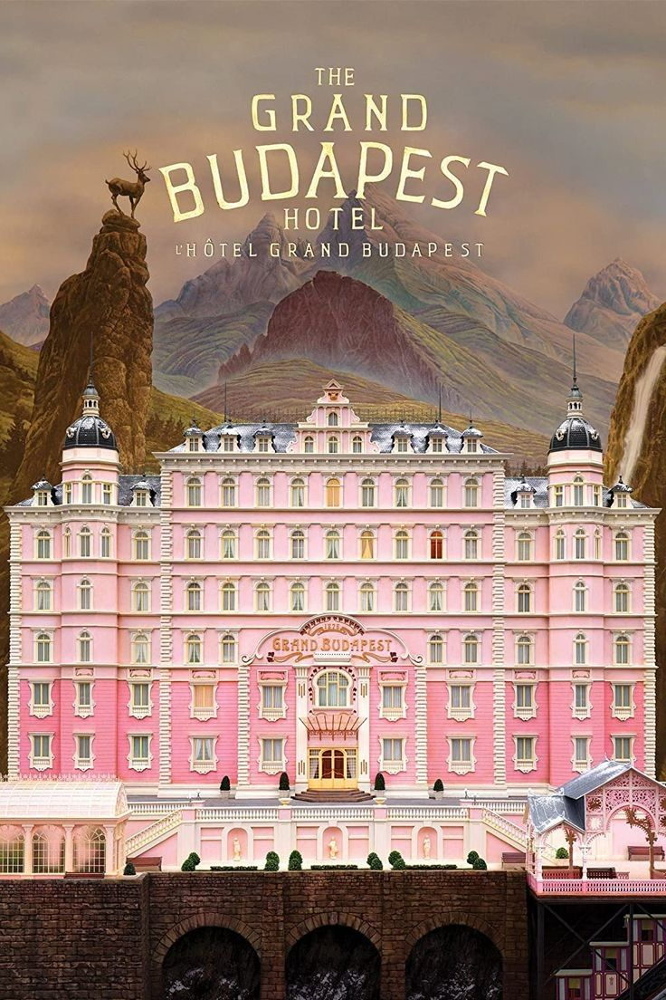
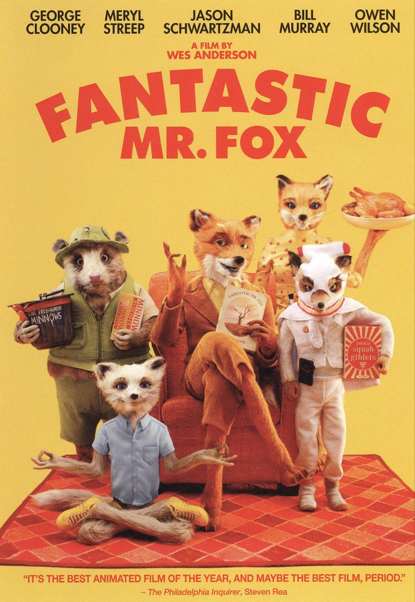
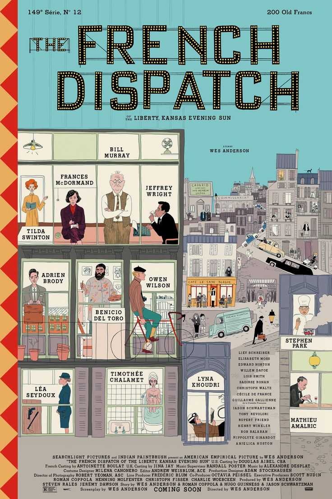

Світ у баченні
Веса Андерсона
Пориньте у всесвіт: досліджуйте фільмографію, знаходьте стрічку під свій настрій та копіюйте фірмові палітри.
Карусель кадрів
Знамениті стрічки, з яких варто розпочати занурення у світ симетрії та авторського гумору.


Французький вісник
Збірка іронічних історій з останнього випуску часопису.
2021 • 108 хв
Знайдіть фільм за одну мить
Оберіть настрій і одразу побачите стрічку, яка йому відповідає